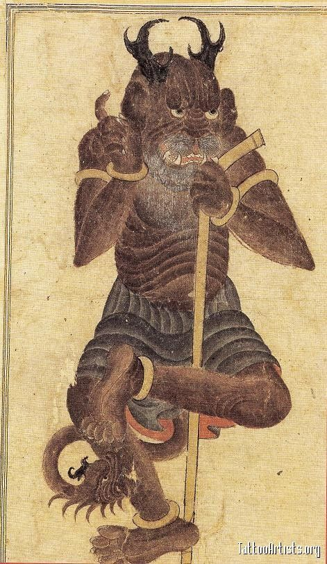
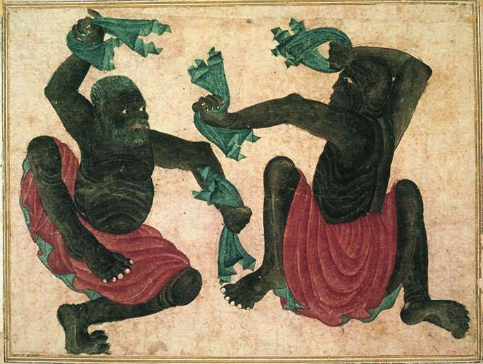

Los Djinn
Antes de los hombres, antes incluso de que la tierra fuera moldeada según los relatos sagrados, ya existían ellos.
Los Djinn —también llamados genios en occidente— pertenecen a la tradición del mundo islámico y árabe. Su origen aparece en el Corán, donde se describe que fueron creados de “fuego sin humo”, una sustancia invisible y sutil que no pertenece al barro del que fue formado el ser humano.
No son fantasmas.
No son ángeles.
No son demonios en el sentido cristiano.
Son otra creación.
Habitan un plano que coexiste con el nuestro, oculto a la vista pero entrelazado con el mundo físico. Pueden moverse entre desiertos, ruinas, casas abandonadas y lugares donde la energía parece alterarse. Algunos son benévolos, otros indiferentes… y otros profundamente peligrosos.

Comportamiento
A diferencia de muchas entidades espirituales, los Djinn poseen libre albedrío. Pueden elegir el bien o el mal. Pueden creer o rechazar la fe. Pueden ayudar… o destruir.
Se dice que son cambiantes.
Pueden adoptar forma humana, animal o incluso manifestarse como sombras densas y distorsionadas. En relatos tradicionales aparecen como figuras altas envueltas en oscuridad, con ojos que brillan como brasas. Otros cuentan que se presentan como viajeros comunes, mezclándose entre las personas sin ser reconocidos.
Pero su verdadera forma, aquella hecha de fuego invisible, rara vez es vista.
Algunos Djinn son solitarios; otros viven en comunidades, con jerarquías y líderes. Entre ellos existen reyes, clanes y pactos antiguos. No son criaturas simples: tienen orgullo, memoria y voluntad.
Y no olvidan con facilidad.
Los Djinn pueden influir de manera sutil. Un susurro en la mente. Un impulso extraño. Un cambio en la fortuna que parece inexplicable.
No todos interfieren con los humanos, pero cuando lo hacen, rara vez es por casualidad.
Algunos relatos hablan de posesión, especialmente cuando alguien invade sin respeto un lugar que les pertenece. Casas abandonadas, ruinas, desiertos al anochecer… son territorios donde el velo es más delgado.
También se dice que pueden conceder favores, conocimiento o riqueza. Pero cada intercambio implica equilibrio. Nada se obtiene sin ofrecer algo a cambio.
Y el problema no es el deseo.
Es no comprender con quién se está negociando.
Ritual de ofrenda
En distintas tradiciones esotéricas del Medio Oriente y el norte de África existen relatos sobre invocaciones a Djinn específicos. Estos rituales suelen implicar aislamiento, círculos de protección, recitación de nombres antiguos y una disciplina estricta.
El error más pequeño puede romper el equilibrio.
Algunas prácticas advierten que jamás se debe invocar por simple curiosidad. Los Djinn respetan la fuerza, la determinación y el conocimiento; desprecian la arrogancia y la ignorancia.
Se dice que, si se sienten engañados o faltados al respeto, pueden traer desgracia prolongada: enfermedades, ruina económica, pesadillas persistentes o fenómenos inexplicables en el hogar.
Y a diferencia de otras entidades, no siempre se marchan cuando se les ordena.

La ira de los Djinn
Un Djinn molesto no siempre ataca de inmediato.
A veces comienza con pequeñas alteraciones: objetos que cambian de lugar, sombras que se deslizan fuera del ángulo de visión, sueños vívidos donde una figura observa sin hablar.
Luego la presión aumenta.
El aire se vuelve pesado. El insomnio se instala. La sensación de estar acompañado nunca desaparece.
En casos extremos, las leyendas hablan de posesión completa, donde la persona afectada pierde control parcial de su cuerpo o su voluntad.
Los Djinn no pertenecen al bien ni al mal absolutos. Son complejos, antiguos y orgullosos.
Algunos caminan entre nosotros sin intención de dañar. Otros buscan influir, tentar o probar la fortaleza humana. Y otros, simplemente, desean que se respete su territorio.
Si alguna vez el viento caliente sopla sin explicación en un cuarto cerrado, si un susurro parece pronunciar tu nombre cuando no hay nadie… quizá no sea imaginación.
Tal vez algo hecho de fuego sin humo ha decidido observarte.
Y en su mundo, ser observado ya es el inicio de un vínculo.